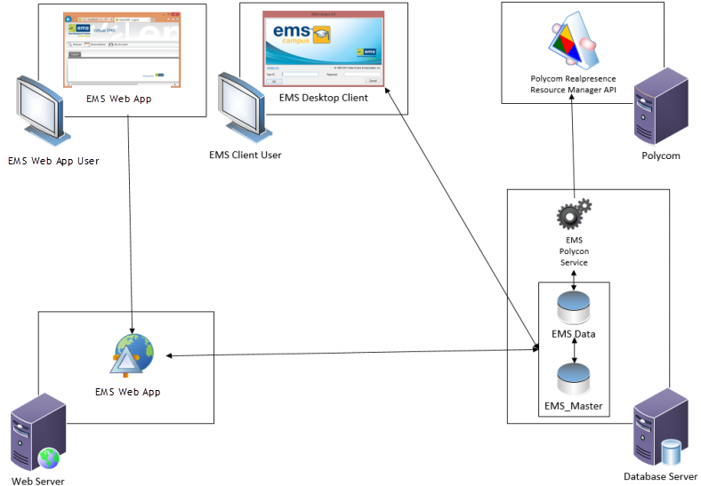

The EMS Polycom Interface is comprised of two components:
New video conferences booked in EMS are pushed to the Polycom Realpresence Resource Manager API based on various settings defined within EMS (see EMS Polycom Interface Configuration Settings) Subsequent critical booking changes (i.e. date, time or location changes) and/or cancellations are also relayed to the API. The EMS Polycom Interface is a one-way interface and changes made in Polycom will not be reflected in EMS.

See Also: Advanced EMSPolycom Interface Configuration to learn about how data is transferred from EMS to the Polycom Realpresence Resource Manager API.
Page tags: article:topic